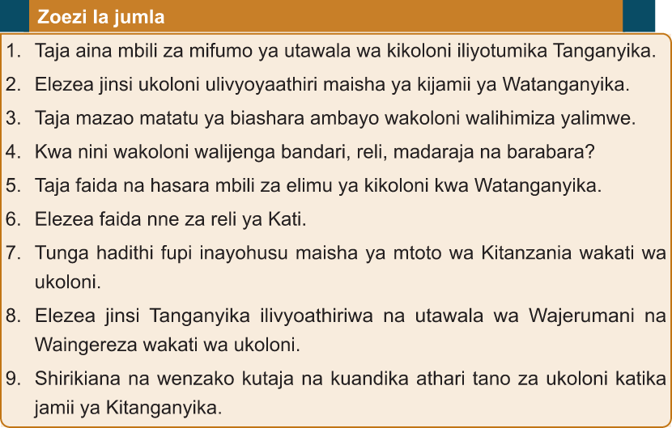

Chunguza katika vyanzo mbalimbali ikiwamo maktaba mtandao namna viongozi wa kijadi walivyopinga utawala wa kikoloni kisha wasilisha darasani
1. Taja aina mbili za mifumo ya utawala wa kikoloni iliyotumika Tanganyika.
2. Elezea jinsi ukoloni ulivyoyaathiri maisha ya kijamii ya Watanganyika.
3. Taja mazao matatu ya biashara ambayo wakoloni walihimiza yalimwe.
4. Kwa nini wakoloni walijenga bandari, reli, madaraja na barabara?
5. Taja faida na hasara mbili za elimu ya kikoloni kwa Watanganyika.
6. Elezea faida nne za reli ya Kati.
7. Tunga hadithi fupi inayohusu maisha ya mtoto wa Kitanzania wakati wa ukoloni.
8. Elezea jinsi Tanganyika ilivyoathiriwa na utawala wa Wajerumani na Waingereza wakati wa ukoloni.
9. Shirikiana na wenzako kutaja na kuandika athari tano za ukoloni katika jamii ya Kitanganyika.
